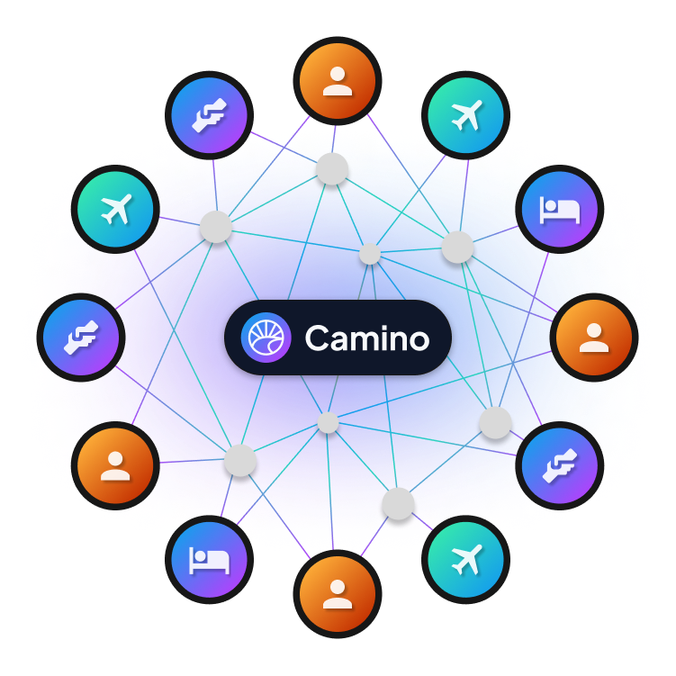

<section class="py-12 md:py-24">
  <div class="container flex md:flex-row flex-col items-center">
    <div class="lg:w-6/12 md:w-1/2 w-5/6" data-sal="slide-right" data-sal-delay="0" data-sal-duration="500">
      
    </div>
    <div class="lg:flex-grow md:w-9/12 lg:pl-24 md:pl-16 flex flex-col md:items-start md:text-left mb-16 md:mb-0 items-center text-center text-gray-300" data-sal="slide-left" data-sal-delay="250" data-sal-duration="500">
      <h2 class="text-headline" id="about">Who we are.</h2>
      <p class="text-body">Camino is a consortium blockchain developed by Chain4Travel AG and operated and governed by market participants of the travel industry. Camino combines permissioned and permissionless blockchain solutions to solve the blockchain trilemma in favor of scalability while still being open to new participants, thus, becoming a semi- permissioned blockchain.</p>
    </div>
  </div>
</section>